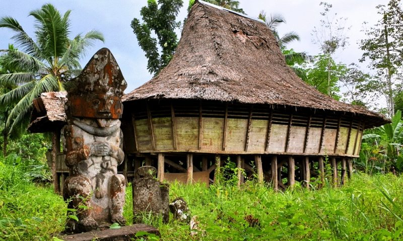

Aoha Noro Nilului Wahea Aoha Noro Nilului Waoso, Alisi Ta
Fadaya-daya Hulu Ta Fawolo-wolo
Suku Nias
Suku Nias adalah kelompok etnik yang berasal dari
Pulau Nias. Mereka menamakan diri mereka "Ono Niha" (Ono
berarti anak/keturunan; Niha = manusia) dan Pulau Nias sebagai
"Tanö Niha" (Tanö berarti tanah). Hukum adat tradisional
Nias secara umum disebut fondrakö. Masyarakat Nias
kuno hidup dalam budaya megalitik, dibuktikan oleh peninggalan
sejarah berupa ukiran pada batu-batu besar yang masih ditemukan di
wilayah pedalaman pulau ini sampai sekarang.

Batu Megalitik Hiligoe, Nias (Sumber: kliknusae.com)
Asal-usul
Mitologi
Berbagai mitos dalam hoho menceritakan kedatangan suku Nias ke
pulau. Sebuah hoho mengatakan bahwa orang Nias berasal dari sebuah
pohon kehidupan yang disebut "Sigaru Tora'a" yang terletak di
sebuah tempat yang bernama Teteholi Ana'a. Kedatangan manusia
pertama ke Pulau Nias dimulai pada zaman Raja Sirao yang memiliki
9 putra yang disuruh keluar dari Teteholi Ana'a karena
memperebutkan Takhta Sirao. Ke-9 putra itulah yang dianggap
menjadi orang yang pertama sekali yang menginjakkan kaki di Pulau
Nias. Mitos lainnya, Inada Sirici menurunkan 6 orang anak ke Pulau
Nias dan menjadi leluhur. Masih terdapat beberapa versi lain
tentang kehadiran manusia di Nias.
Penelitian Arkeologi
Penelitian arkeologi telah dilakukan di Pulau Nias sejak tahun
1999. Penelitian ini menemukan Pulau Nias telah dihuni sejak
12.000 tahun yang lalu oleh imigran dari daratan Asia, bahkan ada
indikasi sejak 30.000 tahun lampau. Budaya Hoabinh di Vietnam yang
sama dengan budaya yang ada di Pulau Nias menimbulkan dugaan
imigrasi penduduk dari Vietnam.
Pada 2013, penelitian genetika oleh mahasiswa doktoral Departemen
Biologi Molekuler Forensik Erasmus MC menyimpulkan bahwa
masyarakat Nias berasal dari rumpun bangsa Austronesia. Mereka
diperkirakan datang dari Taiwan melalui jalur Filipina 4.000-5.000
tahun lalu.
Penelitian ini juga menemukan bahwa dalam genetika orang Nias saat
ini tidak ada lagi jejak dari masyarakat Nias kuno yang sisa
peninggalannya ditemukan di Gua Tögi Ndrawa. Penelitian arkeologi
terhadap alat-alat batu yang ditemukan menunjukkan bahwa manusia
yang menempati gua tersebut berasal dari masa 12.000 tahun lalu.
Ciri Fisik Khas Suku Nias
Ciri Khas
Deskripsi
Postur Tubuh
Orang Nias umumnya memiliki postur tubuh yang sedang hingga
tinggi. Tinggi badan rata-rata mereka berkisar antara 155 cm
hingga 168 cm.
Bentuk Wajah
Wajah orang Nias cenderung berbentuk oval dengan rahang yang
cukup tegas, terutama pada pria.
Warna Kulit
Kulit orang Nias umumnya berwarna putih atau kuning langsat.
Sebagian juga memiliki kulit sawo matang seperti kebanyakan
orang Indonesia lainnya.
Rambut
Rambut orang Nias biasanya berwarna hitam dan cenderung tebal.
Mata
Salah satu ciri khas yang paling menonjol adalah bentuk mata
mereka yang cenderung sipit, meskipun tidak sesipit mata orang
Tionghoa
Bahasa
Dialek
Umumnya bahasa Nias dianggap memiliki tiga dialek. Dialek utara
dituturkan di daerah Gunungsitoli, Alasa dan Lahewa. Dialek selatan
dituturkan di Nias Selatan. Sementara itu, dialek tengah dituturkan
di Nias Barat, khususnya di daerah Sirombu dan Mandrehe. Sementara
itu, Proyek Penelitian Bahasa dan Sastra Indonesia dan Daerah
Sumatera Utara 1977/1978 membagi bahasa Nias ke lima dialek. Dialek
utara dituturkan di Alasa dan Lahewa; dialek Gunungsitoli; dialek
barat di Mandrehe, Sirombu, Kepulauan Hinako; dialek tengah di Gido,
Idano Gawo, Gomo, Lahusa; dan dialek selatan di Telukdalam, Pulau
Tello, dan Kepulauan Batu. Tingkat kemiripan antara dialek ini
mencapai 80%. Bahasa Nias juga sebagai bahasa resmi di Nias.
Alfabet
Abjad dalam bahasa Nias berbeda dengan abjad dalam bahasa Indonesia,
di mana ada yang dikurangi (tidak dipakai) dari abjad bahasa
Indonesia dan ada yang ditambahkan abjad unik (karakter khusus)
dalam bahasa Nias yang pengucapannya tidak terdapat di dalam abjad
bahasa Indonesia. Abjad Bahasa Nias huruf besar dan huruf kecil
sebagai berikut:
Beberapa kosakata bahasa Nias dan terjemahannya dalam bahasa
Indonesia dapat dilihat di Daftar Swadesh bahasa Nias.
Kepercayaan
Sebagian besar orang Nias adalah pemeluk agama Kristen Protestan.
sedangkan yang lainnya beragama Islam, Katolik, Buddha dan Fanömba
adu. setidaknya menurut kenyataan sekitar tahun 1967. Sistem
kepercayaan yang disebut terakhir ini adalah nama yang diberikan
oleh pihak luar. yang merupakan sistem kepercayaan yang berasal dari
leluhur mereka. Mereka menyebut Molehe Adu, yaitu pemujaan roh
leluhur. Untuk itu mereka membuat patung-patung kayu (adu) yang
ditempati oleh roh leluhur.
Dalam sistem kepercayaan ini dikenal beberapa dewa. Yang terpenting
ada lah Lowalangi, yang dianggap raja segala dewa dari dunia atas
atau sang pencipta. Lature Danö adalah raja dewa-dewa dunia bawah da
saudara tua Lowalangi tadi. Silewe Nasarata adalah pelindung dari
para pemuka agama dan merupakan isteri dari Lowalangi; dan sumber
lain menyebutkan sebagai penghubung dewa dunia atas dan dewa dunia
bawah, serta sebagai penghubung antara kaum dewa dan umat manusia.
Sebenarnya bagi orang Nias Selatan nama Lowalangi, yang biasa di
sebut Lowalani, diperkenalkan oleh misionaris Jerman . Orang Nias
Selatan dulu mengenal nama Ida Samihara Luo sebagai pencipta dewa
dan manusia. Sang pencipta ini tidak mempunyai realitas, namun dari
padanya timbul dua anak kembar yang kemudian anak kembar ini kawin
dan mengembang biakkan dewa dan manusia